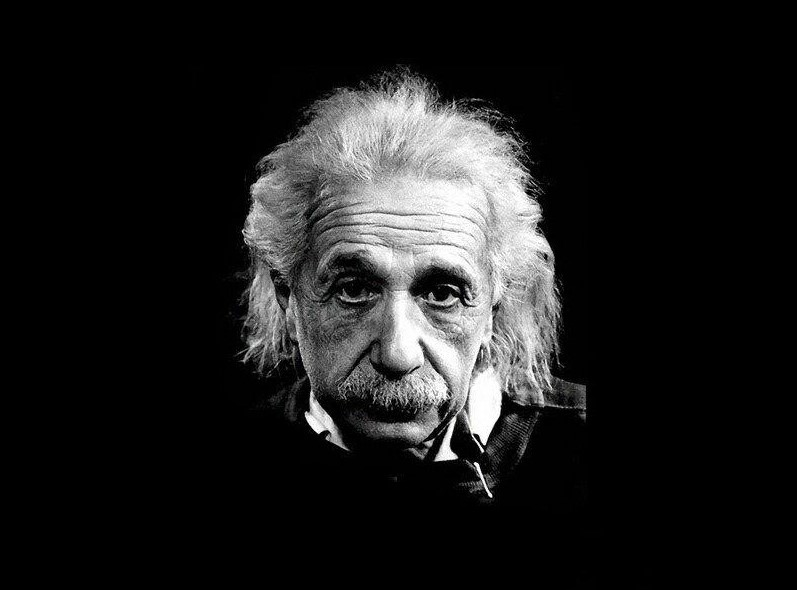
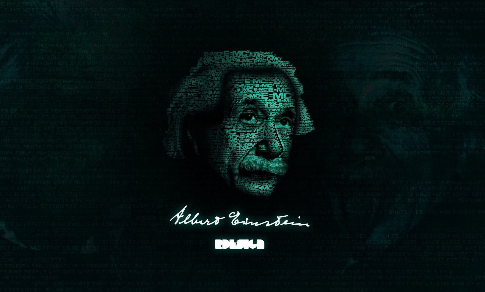

Albert Einstein was a German-born theoretical physicist known for developing the theory of relativity and making significant contributions to quantum mechanics. He was a central figure in the revolutionary reshaping of the scientific understanding of nature that modern physics accomplished in the early twentieth century. Einstein's mass-energy equivalence formula, E = mc2, has been called "the world's most famous equation." He received the 1921 Nobel Prize in Physics for his services to theoretical physics, particularly for his discovery of the law of the photoelectric effect. His work also influenced the philosophy of science. In 1905, Einstein published four groundbreaking papers, including the photoelectric effect theory, Brownian motion explanation, special theory of relativity, general theory of relativity, and cosmological paper. He also made important contributions to statistical mechanics and quantum theory, particularly the quantum physics of radiation. Einstein was ranked the greatest physicist of all time in a 1999 poll.
Albert Einstein's education was characterized by both formal schooling and independent study. He was born in Ulm, Germany, in 1879, and his early education began at a Catholic elementary school. However, Einstein didn't have a smooth experience in the traditional educational system due to his unconventional thinking and rebellious nature. Einstein's family relocated to Munich in 1880, where he attended a Catholic school for a short time before transferring to the Luitpold Gymnasium. It was at this school where Einstein encountered a more rigorous and structured curriculum. His teachers were often frustrated with his disinterest in rote learning and strict adherence to rules, which led to conflicts. Despite his challenging relationship with the formal education system, Einstein was deeply interested in science and mathematics from a young age. He explored advanced topics in mathematics independently and was introduced to science by his uncle, Jakob Einstein. This early exposure to science and his inherent curiosity laid the foundation for his future academic pursuits. In 1895, Einstein passed the entrance exam for the Swiss Federal Polytechnic in Zurich. He enrolled in the four-year mathematics and physics teaching diploma program. While at the Polytechnic, Einstein found himself among like-minded peers who appreciated his intellectual curiosity. He continued to struggle with some aspects of the curriculum but excelled in physics and mathematics. Einstein graduated from the Polytechnic in 1900 but faced difficulty finding suitable employment. He eventually secured a job as a patent examiner at the Swiss Patent Office in Bern, a position he held from 1902 to 1909. During his time as a patent examiner, Einstein continued his scientific research and published several groundbreaking papers, including his theory of special relativity in 1905. In 1908, Einstein began working as a lecturer at the University of Bern and later secured a position at the University of Zurich in 1909. He continued to publish influential papers, and by 1915, he had developed his theory of general relativity. This theory revolutionized our understanding of gravity. Einstein's educational journey was marked by a mix of formal education, self-directed learning, and a relentless pursuit of scientific knowledge. His unconventional approach to education and willingness to question established theories and principles played a significant role in his groundbreaking discoveries and his eventual status as one of the most iconic scientists in history.
Resolved an unsolved puzzle by suggesting that energy is exchanged only in discrete amounts (quanta). This idea was pivotal to the early development of quantum theory.
Explained empirical evidence for the atomic theory, supporting the application of statistical physics.
Reconciled Maxwell's equations for electricity and magnetism with the laws of mechanics by introducing changes to mechanics, resulting from analysis based on empirical evidence that the speed of light is independent of the motion of the observer. Discredited the concept of a "luminiferous ether".
Equivalence of matter and energy, E = mc2, the existence of "rest energy", and the basis of nuclear energy.